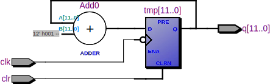

TI 74xx series
7400
quad 2-input NAND gate
library ieee;
use ieee.std_logic_1164.all;
entity ti7400 is
port (a, b: in std_logic_vector(3 downto 0);
q: out std_logic_vector(3 downto 0));
end entity;
architecture behavior of testvhd is
begin
q <= not (a and b);
end architecture;
module ti7400(input [3:0] a, b, output [3:0] q);
assign q[0] = !(a[0] & b[0]);
assign q[1] = !(a[1] & b[1]);
assign q[2] = !(a[2] & b[2]);
assign q[3] = !(a[3] & b[3]);
endmodule
7402
quad 2-input NOR gate
library ieee;
use ieee.std_logic_1164.all;
entity ti7402 is
port (a, b: in std_logic_vector(3 downto 0);
q: out std_logic_vector(3 downto 0));
end entity;
architecture behavior of ti7402 is
begin
q <= not (a or b);
end architecture;
module ti7402(a1, b1, a2, b2, a3, b3, a4, b4, y1, y2, y3, y4);
input a1, b1, a2, b2, a3, b3, a4, b4;
output y1, y2, y3, y4;
assign y1 = !(a1 || b1);
assign y2 = !(a2 || b2);
assign y3 = !(a3 || b3);
assign y4 = !(a4 || b4);
endmodule
7404
hex inverter gate
library ieee;
use ieee.std_logic_1164.all;
entity ti7404 is
port (a: in std_logic_vector(5 downto 0);
q: out std_logic_vector(5 downto 0));
end entity;
architecture behavior of ti7404 is
begin
q <= not a;
end architecture;
module ti7404(input [5:0] a, output [5:0] q);
assign q = ~a;
endmodule

7408
library ieee;
use ieee.std_logic_1164.all;
entity ti7408 is
port (a, b: in std_logic_vector(3 downto 0);
q: out std_logic_vector(3 downto 0));
end entity;
architecture behavior of ti7408 is
begin
q <= a and b;
end architecture;
module ti7408(input [3:0] a, b, output [3:0] q);
assign q = a & b;
endmodule
7432
quad 2-input OR gate
library ieee;
use ieee.std_logic_1164.all;
entity ti7432 is
port (a1, b1, a2, b2, a3, b3, a4, b4: in std_logic; y1, y2, y3, y4: out std_logic);
end entity;
architecture behavior of ti7432 is
begin
y1 <= a1 or b1;
y2 <= a2 or b2;
y3 <= a3 or b3;
y4 <= a4 or b4;
end architecture;
module ti7432(input a1, a2, a3, a4, b1, b2, b3, b4, output q1, q2, q3, q4);
assign q1 = a1 && b1;
assign q2 = a2 && b2;
assign q3 = a3 && b3;
assign q4 = a4 && b4;
endmodule

7448
BCD to 7-segment decoder/driver
library ieee;
use ieee.std_logic_1164.all;
entity ti7448 is
port(
dec: in std_logic_vector(3 downto 0);
q: out std_logic_vector(6 downto 0));
end entity ti7448;
architecture behavior of ti7448 is
begin
with dec select
q <= "0111111" when "0000",
"0000110" when "0001",
"1011011" when "0010",
"1001111" when "0011",
"1100110" when "0100",
"1101101" when "0101",
"1111100" when "0110",
"0000111" when "0111",
"1111111" when "1000",
"1100111" when "1001",
"0000000" when others;
end architecture behavior;

7483
4-bit binary full adder
library ieee;
use ieee.std_logic_1164.all;
use ieee.numeric_std.all;
entity ti7483 is
port(
c0: in std_logic;
c4: out std_logic;
a, b: in unsigned(3 downto 0);
s: out unsigned(3 downto 0));
end entity;
architecture behavior of ti7483 is
signal tmp: unsigned(5 downto 0);
begin
tmp <= ('0' & a & '1') + ('0' & b & c0);
s <= tmp(4 downto 1);
c4 <= tmp(5);
end architecture;

74133
single 13-input NAND gate
library ieee;
use ieee.std_logic_1164.all;
entity ti74133 is
port (a: in std_logic_vector(12 downto 0); y: out std_logic);
end entity;
architecture behavior of ti74133 is
begin
y <= not (a(0) and a(1) and a(2) and a(3) and a(4) and a(5) and a(6) and a(7) and
a(8) and a(9) and a(10) and a(11) and a(12));
end architecture;

74138
3-line to 8-line decoder/demultiplexer, inverting outputs
library ieee;
use ieee.std_logic_1164.all;
entity ti74138 is
port (en1, en2a_n, en2b_n: in std_logic;
sel: in std_logic_vector(2 downto 0);
y: out std_logic_vector(7 downto 0));
end entity;
architecture behavior of ti74138 is
signal en: std_logic;
signal demux: std_logic_vector(7 downto 0);
begin
en <= en1 and (not en2a_n) and (not en2b_n);
y <= demux when en='1' else "11111111";
with sel select
demux <= "11111110" when "000",
"11111101" when "001",
"11111011" when "010",
"11110111" when "011",
"11101111" when "100",
"11011111" when "101",
"10111111" when "110",
"01111111" when "111";
end architecture;

74139
dual 2 to 4-line decoder/demultiplexer, inverting outputs
library ieee;
use ieee.std_logic_1164.all;
entity ti74139 is
port(
en0_n, en1_n: in std_logic;
sel0, sel1: in std_logic_vector(1 downto 0);
y0, y1: out std_logic_vector(3 downto 0));
end entity ti74139;
architecture behavior of ti74139 is
signal tmp0, tmp1: std_logic_vector(3 downto 0);
begin
y0 <= "1111" when en0_n='1' else tmp0;
y1 <= "1111" when en1_n='1' else tmp1;
with sel0 select
tmp0 <= "1110" when "00",
"1101" when "01",
"1011" when "10",
"0111" when "11";
with sel1 select
tmp1 <= "1110" when "00",
"1101" when "01",
"1011" when "10",
"0111" when "11";
end architecture behavior;

74150
16-line to 1-line data selector/multiplexer
library ieee;
use ieee.std_logic_1164.all;
entity ti74150 is
port (
g_n: in std_logic;
e: in std_logic_vector(15 downto 0);
sel: in std_logic_vector(3 downto 0);
w_n: out std_logic);
end entity;
architecture behavior of ti74150 is
signal tmp: std_logic;
begin
with sel select
tmp <= e(0) when "0000",
e(1) when "0001",
e(2) when "0010",
e(3) when "0011",
e(4) when "0100",
e(5) when "0101",
e(6) when "0110",
e(7) when "0111",
e(8) when "1000",
e(9) when "1001",
e(10) when "1010",
e(11) when "1011",
e(12) when "1100",
e(13) when "1101",
e(14) when "1110",
e(15) when "1111";
w_n <= g_n or not tmp;
end architecture;
74151
8-line to 1-line data selector/multiplexer
library ieee;
use ieee.std_logic_1164.all;
entity ti74151 is
port (g_n: in std_logic;
e: in std_logic_vector(7 downto 0);
sel: in std_logic_vector(2 downto 0);
w_n, y: out std_logic);
end entity;
architecture behavior of ti74151 is
signal tmp, tmp2: std_logic;
begin
with sel select
tmp <= e(0) when "000",
e(1) when "001",
e(2) when "010",
e(3) when "011",
e(4) when "100",
e(5) when "101",
e(6) when "110",
e(7) when "111";
tmp2 <= g_n or not tmp;
w_n <= tmp2;
y <= not tmp2;
end architecture;
74153
dual 4-line to 1-line data selector/multiplexer, non-inverting outputs
library ieee;
use ieee.std_logic_1164.all;
entity ti74153 is
port (sel: in std_logic_vector(1 downto 0);
g0_n, g1_n: in std_logic;
c0, c1: in std_logic_vector(3 downto 0);
y0, y1: out std_logic);
end entity;
architecture behavior of ti74153 is
signal mux0_out, mux1_out: std_logic;
begin
y0 <= not g0_n and mux0_out;
y1 <= not g1_n and mux1_out;
process (sel, c0, c1)
begin
case sel is
when "00" =>
mux0_out <= c0(0);
mux1_out <= c1(0);
when "01" =>
mux0_out <= c0(1);
mux1_out <= c1(1);
when "10" =>
mux0_out <= c0(2);
mux1_out <= c1(2);
when "11" =>
mux0_out <= c0(3);
mux1_out <= c1(3);
end case;
end process;
end architecture;
74157
quad 2-line to 1-line data selector/multiplexer, non-inverting outputs
library ieee;
use ieee.std_logic_1164.all;
entity ti74157 is
port (sel, g_n: in std_logic;
c0, c1, c2, c3: in std_logic_vector(1 downto 0);
y0, y1, y2, y3: out std_logic);
end entity;
architecture behavior of ti74157 is
signal mux0, mux1, mux2, mux3: std_logic;
begin
y0 <= not g_n and mux0;
y1 <= not g_n and mux1;
y2 <= not g_n and mux2;
y3 <= not g_n and mux3;
process (sel, c0, c1)
begin
case sel is
when '0' =>
mux0 <= c0(0);
mux1 <= c1(0);
mux2 <= c2(0);
mux3 <= c3(0);
when '1' =>
mux0 <= c0(1);
mux1 <= c1(1);
mux2 <= c2(1);
mux3 <= c3(1);
end case;
end process;
end architecture;
74161
library ieee;
use ieee.std_logic_1164.all;
use ieee.numeric_std.all;
entity ti74161 is
port (
clk, rst_n, load_n, enp, ent: in std_logic;
a: in std_logic_vector(3 downto 0);
q: out std_logic_vector(3 downto 0);
c4: out std_logic
);
end entity;
architecture behavior of ti74161 is
signal cnt: unsigned(3 downto 0);
begin
c4 <= '1' when cnt="1111" and ent='1' else '0';
q <= std_logic_vector(cnt);
process (clk, rst_n) begin
if rst_n='0' then
cnt <= (others => '0');
elsif rising_edge(clk) then
if load_n='1' then
if ent='1' and enp='1' then
cnt <= cnt + 1;
end if;
else
cnt <= unsigned(a);
end if;
end if;
end process;
end architecture behavior;
74174
hex D flip-flop, common asynchronous clear
library ieee;
use ieee.std_logic_1164.all;
entity ti74174 is
port (clk, rst_n: in std_logic;
d: in std_logic_vector(5 downto 0);
q: out std_logic_vector(5 downto 0));
end entity;
architecture behavior of ti74174 is
begin
process (clk) is
begin
if rst_n='0' then
q <= (others => '0');
elsif rising_edge(clk) then
q <= d;
end if;
end process;
end architecture;
module ti74174(input clk, input rst_n, input [5:0] d, output reg [5:0] q);
always @(posedge clk, negedge rst_n)
if (!rst_n)
q <= 0;
else
q <= d;
endmodule

74181
4-bit arithmetic logic unit and function generator
library ieee;
use ieee.std_logic_1164.all;
entity ti74181 is
port(
sel, a, b: in std_logic_vector(3 downto 0);
m, c0: in std_logic;
f: out std_logic_vector(3 downto 0);
c4, g, p, eq: out std_logic);
end entity ti74181;
architecture behavior of ti74181 is
signal t0, t1, t2, t3, t4, t5, t6, t7: std_logic;
signal tmp_g, tmp_f3, tmp_f2, tmp_f1, tmp_f0, tmp2, tmp3, tmp4, tmp5: std_logic;
signal tmp6, tmp7: std_logic;
begin
t0 <= not (a(0) or (b(0) and sel(0)) or (sel(1) and not b(0)));
t2 <= not (a(1) or (b(1) and sel(0)) or (sel(1) and not b(1)));
t4 <= not (a(2) or (b(2) and sel(0)) or (sel(1) and not b(2)));
t6 <= not (a(3) or (b(3) and sel(0)) or (sel(1) and not b(3)));
t1 <= not ((not b(0) and sel(2) and a(0)) or (a(0) and b(0) and sel(3)));
t3 <= not ((not b(1) and sel(2) and a(1)) or (a(1) and b(1) and sel(3)));
t5 <= not ((not b(2) and sel(2) and a(2)) or (a(2) and b(2) and sel(3)));
t7 <= not ((not b(3) and sel(2) and a(3)) or (a(3) and b(3) and sel(3)));
tmp2 <= t7 and t5 and t3 and t0;
tmp_g <= t6 or (t7 and t4) or (t7 and t5 and t2) or tmp2;
g <= not tmp_g;
c4 <= (c0 and t1 and t3 and t5 and t7) or tmp_g;
p <= not (t1 and t3 and t5 and t7);
tmp3 <= m and c0 and t1 and t3 and t5;
tmp4 <= (m and t4) or (m and t2 and t5) or (m and t0 and t3 and t5) or tmp3;
tmp_f3 <= not tmp4 xor (not t6 and t7);
tmp5 <= m and c0 and t1 and t3 and t5;
tmp6 <= (m and t0 and t3 and t5) or (m and t2 and t5) or (m and t4) or tmp5;
tmp_f2 <= not tmp6 xor (not t4 and t5);
tmp7 <= (m and t0) or (m and c0);
tmp_f1 <= not tmp7 xor (not t2 and t4);
tmp_f0 <= not (c0 and m) xor (not t0 and t1);
eq <= tmp_f3 and tmp_f2 and tmp_f1 and tmp_f0;
f(3) <= tmp_f3;
f(2) <= tmp_f2;
f(1) <= tmp_f1;
f(0) <= tmp_f0;
end architecture behavior;
74240
octal buffer, inverting outputs
library ieee;
use ieee.std_logic_1164.all;
entity ti74240 is
port (ena_n, enb_n: in std_logic;
a, b: in std_logic_vector(3 downto 0);
qa, qb: out std_logic_vector(3 downto 0));
end entity;
architecture behavior of ti74240 is
begin
qa <= not a when ena_n='0' else (others => '0');
qb <= not b when enb_n='0' else (others => '0');
end architecture;

74244
octal buffer, non-inverting outputs
library ieee;
use ieee.std_logic_1164.all;
entity ti74244 is
port (ena_n, enb_n: in std_logic;
a, b: in std_logic_vector(3 downto 0);
qa, qb: out std_logic_vector(3 downto 0));
end entity;
architecture behavior of ti74244 is
begin
qa <= a when ena_n='0' else (others => '0');
qb <= b when enb_n='0' else (others => '0');
end architecture;

74273
8-bit register, asynchronous clear
library ieee;
use ieee.std_logic_1164.all;
entity ti74273 is
port (
clk, rst_n: in std_logic;
d: in std_logic_vector(7 downto 0);
q: out std_logic_vector(7 downto 0));
end entity;
architecture behavior of ti74273 is
begin
process (clk,rst_n,d)
begin
if rst_n='0' then
q <= (others => '0');
elsif rising_edge(clk) then
q <= d;
end if;
end process;
end architecture;
module ti74273(input clk, input rst_n, input [7:0] d, output reg [7:0] q);
always @(posedge clk, negedge rst_n)
if (!rst_n)
q <= 0;
else
q <= d;
endmodule

74377
8-bit register, clock enable
library ieee;
use ieee.std_logic_1164.all;
entity ti74377 is
port(en_n, clk: in std_logic;
d: in std_logic_vector(7 downto 0);
q: out std_logic_vector(7 downto 0));
end entity ti74377;
architecture behavior of ti74377 is
begin
process (clk)
begin
if rising_edge(clk) and en_n='0' then
q <= d;
end if;
end process;
end architecture behavior;
module ti74377(input clk, input en_n, input [7:0] d, output reg [7:0] q);
always @(posedge clk)
if (!en_n)
q <= d;
endmodule

74557
8-bit by 8-bit multiplier
library ieee;
use ieee.std_logic_1164.all;
use ieee.numeric_std.all;
entity ti74557 is
port (a, b: in std_logic_vector(7 downto 0);
q: out std_logic_vector(15 downto 0));
end entity;
architecture behavior of ti74557 is
signal ua, ub: unsigned(7 downto 0);
signal uq: unsigned(15 downto 0);
begin
ua <= unsigned(a);
ub <= unsigned(b);
uq <= ua * ub;
q <= std_logic_vector(uq);
end architecture;
74595
8-bit shift registers, output latches, parallel outputs
library ieee;
use ieee.std_logic_1164.all;
entity ti74595 is
port(rck, srck, g_n, srclr_n, ser: in std_logic;
q: out std_logic_vector(7 downto 0));
end entity;
architecture behavior of ti74595 is
signal xq: std_logic_vector(7 downto 0);
begin
q <= xq;
process (srck)
begin
if srclr_n='0' then
xq <= (others => '0');
elsif rising_edge(srck) then
xq(7 downto 1) <= xq(6 downto 0);
xq(0) <= ser;
end if;
end process;
end architecture;
744040
12-stage binary ripple counter
library ieee;
use ieee.std_logic_1164.all;
use ieee.numeric_std.all;
entity ti744040 is
port (clk, clr: in std_logic; q: out unsigned(11 downto 0));
end entity;
architecture behavior of ti744040 is
signal tmp: unsigned(11 downto 0);
begin
q <= tmp;
process (clk, clr) begin
if clr='1' then
tmp <= (others => '0');
elsif falling_edge(clk) then
tmp <= tmp + 1;
end if;
end process;
end architecture;
